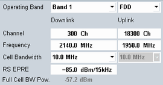
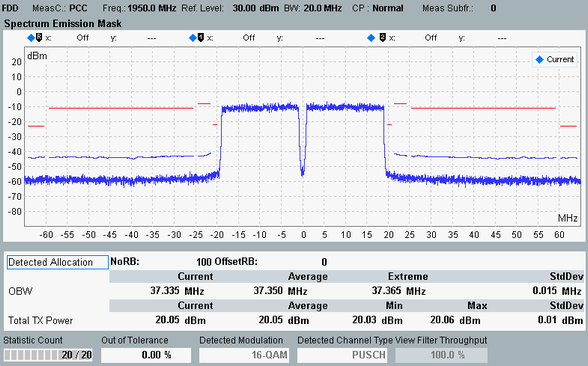

The purpose of a signaling application is to establish a network connection to a mobile phone to perform various tests. All signaling applications are controlled in an analogous manner.
As an example, we set up a connection to a UE via the LTE signaling application. Then we use the LTE multi-evaluation measurement to analyze the uplink signal.
To perform an LTE signaling measurement, proceed as follows:
Reset your R&S CMW to ensure a definite instrument state.
Connect your UE to the RF 1 COM port.
Enable the "LTE Signaling" application:
If you operate the GUI via a large screen, the GUI is by default in multiple-window mode.
In the main window, enable the checkbox behind the "LTE Signaling" entry.
If you operate the GUI via a built-in instrument display, the GUI is in single-window mode.
Press SIGNAL GEN to open the "Generator/Signaling Controller" dialog. Enable the checkbox behind the "LTE Signaling" entry.
In the main view of the signaling application, adjust the RF settings to the capabilities of your UE.
Configure especially the duplex mode (FDD / TDD), the band, the channel and the cell bandwidth. The "RS EPRE" must be sufficient so that the UE under test can receive the DL signal.

Press the "Config" hotkey to open the configuration dialog.
In section "RF Settings", select a bidirectional RF connector for input and output. In this example, we use RF 1 COM.
If necessary, also adjust the "External Attenuation" settings.
Close the configuration dialog.
To turn on the DL signal, right-click the "LTE Signaling" softkey and click ON.
Wait until the "LTE Signaling" softkey indicates the "ON" state and the hour glass symbol has disappeared.
Switch on the UE.
The UE synchronizes to the DL signal and attaches. A default bearer is established.
Note the connection states displayed in the main view and wait until the attach procedure is complete.
By default, the RRC connection is kept after the attach is complete.

The default bearer and the established RRC connection are usually sufficient for testing.
If you want to set up a dedicated bearer, press the "Connect" hotkey.
Note the connection states displayed in the main view and wait until the connection has been established.

Use the "LTE TX Meas" softkey to switch to the multi-evaluation measurement.
The measurement application is opened and the combined signal path scenario is selected automatically. Furthermore, the frame trigger signal provided by the "LTE Signaling" application is selected as trigger source.
To start the measurement, right-click the "Multi Evaluation" softkey and click ON.
The main view provides an overview of the measurement results.
To enlarge a diagram presented in the main view, double-click it.
The following example shows the enlarged "Spectrum Emission Mask" view.
